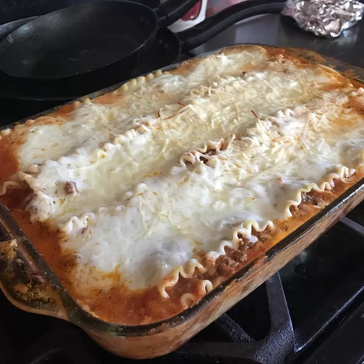

Lasagna

Making perfect homemade lasagna doesn't have to be
tedious. This top-rated easy lasagna recipe comes
together quickly with a relatively short ingredient
list.
Facts on the recipe:
- Prep Time: 10 min
-
Cook Time: 1 hr 10 mins
-
Additional Time: 10 mins
-
Total Time: 1 hr 30 mins
- Servings: 12
-
Yield: 1 9x13-inch lasagn
Full Recipe
Ingredients
- 1 pound lean ground beef
- 1 (32 ounce) jar spaghetti sauce
- 32 ounces cottage cheese
- 3 cups shredded mozzarella cheese, divided
- 2 eggs
- ½ cup grated Parmesan cheese
- 2 teaspoons dried parsley
- salt to taste
- ground black pepper to taste
- 9 lasagna noodles
- ½ cup water
Directions
-
Preheat the oven to 350 degrees F (175 degrees C).
-
Heat a large skillet over medium-high heat. Cook and
stir ground beef in the hot skillet until browned
and crumbly, 8 to 10 minutes. Drain and discard
grease. Stir in spaghetti sauce and simmer for 5
minutes.
-
Combine cottage cheese, 2 cups of mozzarella cheese,
eggs, 1/2 of the grated Parmesan cheese, dried
parsley, salt, and pepper in a large bowl.
-
Spread 3/4 cup of sauce in a 9x13-inch baking dish.
Cover with 3 uncooked lasagna noodles, 1 3/4 cups of
cheese mixture, and 1/4 cup sauce; repeat layers
once more. Top with remaining 3 noodles, sauce,
mozzarella, and Parmesan cheese. Pour 1/2 cup water
along the edges of the dish. Cover tightly with
aluminum foil.
-
Bake in the preheated oven for 45 minutes. Uncover
and bake for an additional 10 minutes. Let stand 10
minutes before serving.